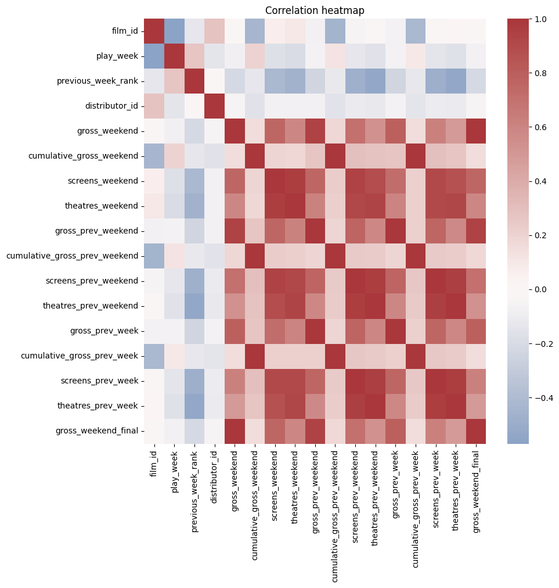
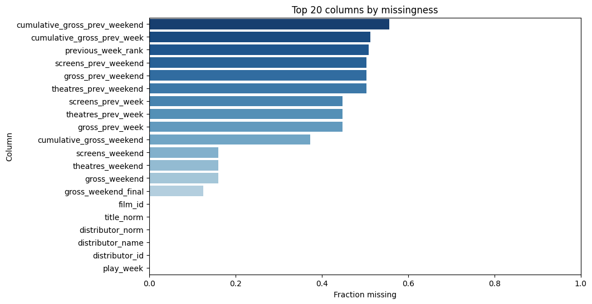
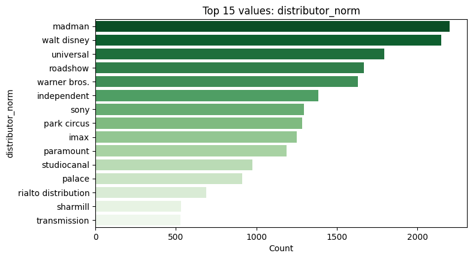
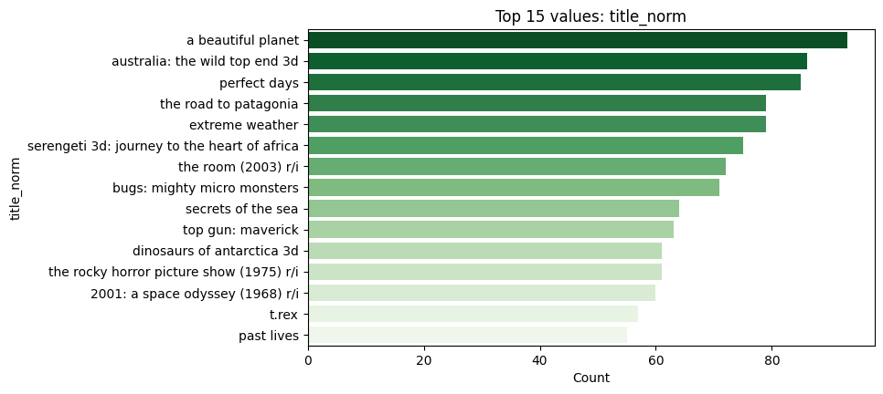
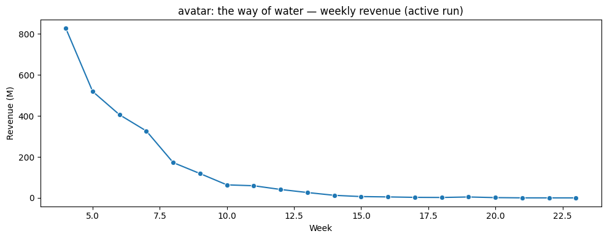

Predicting Movie Final Gross from Week 1 with XGBoost
This report walks through how I predict a film’s final box-office total (final_total) using only its first-week total (wk1_total). It’s a practical forecasting problem for programming, distribution, and marketing decisions.
Why it matters: - Early revenue signals inform marketing spend and screen allocation. - Simple, robust models let teams simulate scenarios quickly.
Pipeline at a glance: - Data: DuckDB database at data/numero.duckdb (AU releases 2023–2024) - Preprocessing: flatten/clean film records; handle missingness/outliers; engineer week-1/total features - Model: XGBoost regressor on log-transformed inputs/targets - Deployment: FastAPI service (api_min.py, multi_api.py) + optional MCP endpoints for chatbot and batch use
1) Dataset overview
Source: internal Australian box-office records (2023–2024) stored in DuckDB at data/numero.duckdb.
Tables typically include: films_basic_clean, films_clean, films_raw, films_strict, films_with_fallback.
Challenges: nested JSON in raw feeds, missing values, inconsistent naming, and heavy-tailed revenues (blockbusters).
The next cell lists tables and shows a small preview (if the DB is present).
Code
from pathlib import Pathtry:import duckdbimport pandas as pdexceptException: duckdb =None pd =Noneif duckdb and pd:try: db_rel = Path("data") /"numero.duckdb"if db_rel.exists(): con = duckdb.connect(database=str(db_rel), read_only=True)try: tables = [t[0] for t in con.execute("SHOW TABLES").fetchall()] table ="films_clean"if"films_clean"in tables else (tables[0] if tables elseNone)if table: df = con.execute(f"SELECT * FROM {table} LIMIT 5").df() display(df)else:print("No tables found in local DuckDB.")finally: con.close()else:print("Local DuckDB not found. Skipping preview.")exceptException:print("Data preview not available in this environment.")else:print("DuckDB/pandas not available. Skipping preview.")
Key steps I applied (see exploration notebooks for full details): - Flatten raw JSON payloads and explode film arrays into a row-per-film table. - Standardize names (strip whitespace, normalize casing), cast numeric fields, and deduplicate. - Handle missingness: treat null-like tokens as missing; leave true NaNs intact for model-aware handling. - Feature selection: focus on wk1_total as input, final_total as target for this model. - Transformations: use log1p on input and target to stabilize heavy-tailed distributions. - Outliers: downweight or robustness through transformation rather than hard clipping.
3) Exploratory data analysis (EDA)
For the web-friendly version, i have embed static figures generated during exploration: - Correlation heatmap of key numerical features - Missingness by column - Top distributors and top titles by volume/revenue - A line graph showing the weekly revenue decline for Avatar
All images are served from notebooks/reports/figs/ to avoid live data loading online.
EDA figures (static for publishing)
Correlation heatmap

Missingness by column

Top distributors

Top titles

Avatar weekly revenue trend (decline over time)

Notes - These PNGs live under notebooks/reports/figs/. - Replace with updated images anytime; the report will embed whatever is present at those paths.
4) Modeling with XGBoost
Why XGBoost: - Strong baseline for tabular regression, handles non-linearities and interactions well - Works nicely with log-transformed revenues (heavy tails) - Mature tooling and fast training
Training recipe (concise): - Split: train/validation/test (holdout) - Transform: wk1_total and target final_total via log1p/expm1 - Objective: squared error; early stopping over trees - Report: RMSE, MAE, MAPE_eps1, SMAPE, R²
The next cell loads saved holdout metrics from artifacts if available.
Code
from pathlib import Pathimport json# Resolve repo rootroot =Nonep = Path.cwd()for q in [p] +list(p.parents):if (q /'README.md').exists() or (q /'_quarto.yml').exists() or (q /'.git').exists(): root = qbreakroot = root or Path.cwd()# Candidate artifact locationscandidates = [ root /'boxoffice'/'final_total'/'training_metrics.json', root /'experiments'/'final_total_baseline'/'training_metrics.json',]metrics =Nonefor c in candidates:if c.exists():withopen(c, 'r', encoding='utf-8') as f: payload = json.load(f) metrics = payload.get('holdout', payload)print('Loaded metrics from', c)breakif metrics isNone:print('No metrics file found in expected locations.')else:# Pretty print order = ['RMSE','MAE','MAPE_eps1','SMAPE','WAPE','R2']for k in order:if k in metrics: v = metrics[k]if k in ('MAPE_eps1','SMAPE','WAPE'):print(f'- {k}: {100.0*float(v):.2f}%')elif k =='R2':print(f'- {k}: {float(v):.4f}')else:print(f'- {k}: {float(v):,.4f}')
Saving artifacts - I have persisted the XGBoost booster plus JSON sidecars: metadata.json, schema.json, training_metrics.json. - See src/boxai/models/final_total_predictor.py for a minimal loader with log1p/expm1 transforms.
FastAPI service - Minimal: api_min.py — POST /predict with { "wk1_total": <float> } - Multi-model ready: multi_api.py — GET /healthz, GET /predict?wk1_total= with FINAL_TOTAL_ARTIFACTS env override
MCP (Model Control Protocol) - Example endpoints in experiments/MCP_Model/boxoffice_api.py: /mcp/metadata, /mcp/predict for chatbot/batch integrations.
The next cell shows a simple architecture diagram of data → model → API → chatbot.
The FastAPI service can be wrapped with MCP-style endpoints for LLM tools.
See experiments/MCP_Model/boxoffice_api.py for /mcp/metadata and /mcp/predict.
A chatbot can discover the model, validate schema, and send batches of instances.
Example workflow: 1) Chatbot calls /mcp/metadata to learn inputs/outputs and health 2) Chatbot sends batch to /mcp/predict with validated instances 3) Responses feed follow-up questions or “what-if” simulations
7) References & links
Data: internal AU releases in DuckDB at data/numero.duckdb